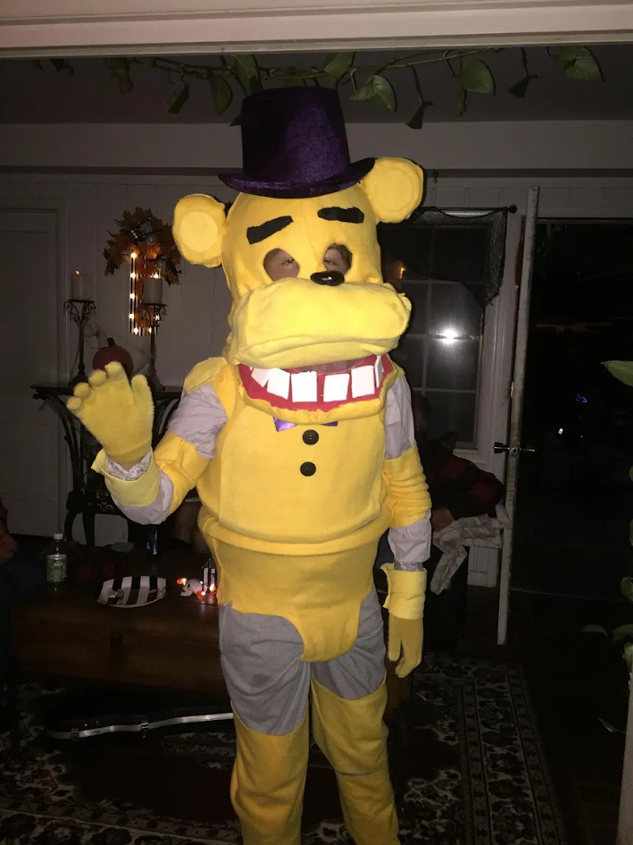
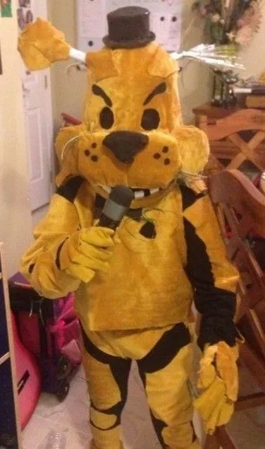
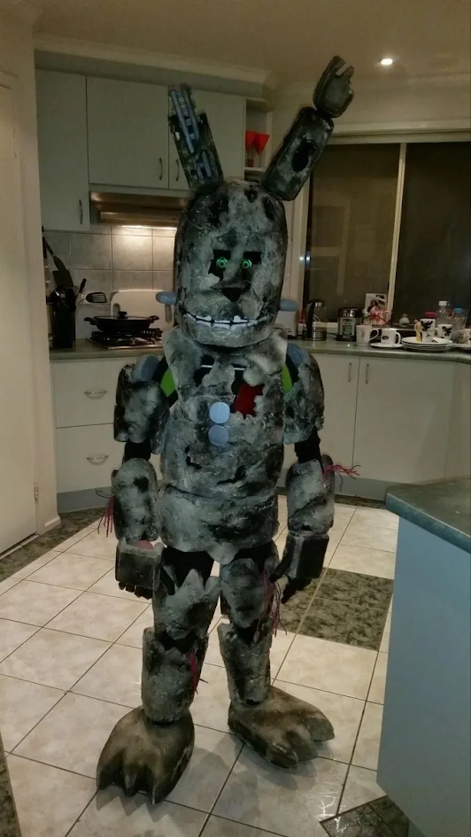
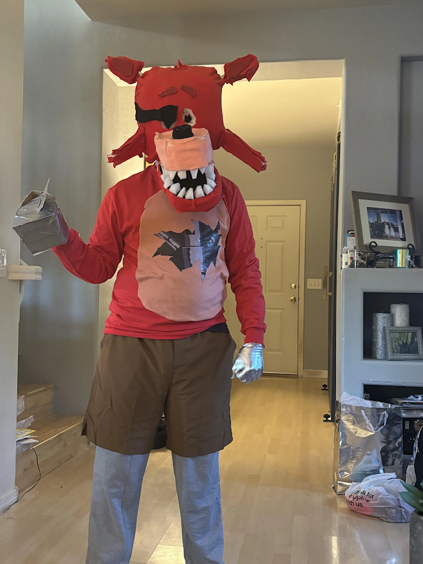
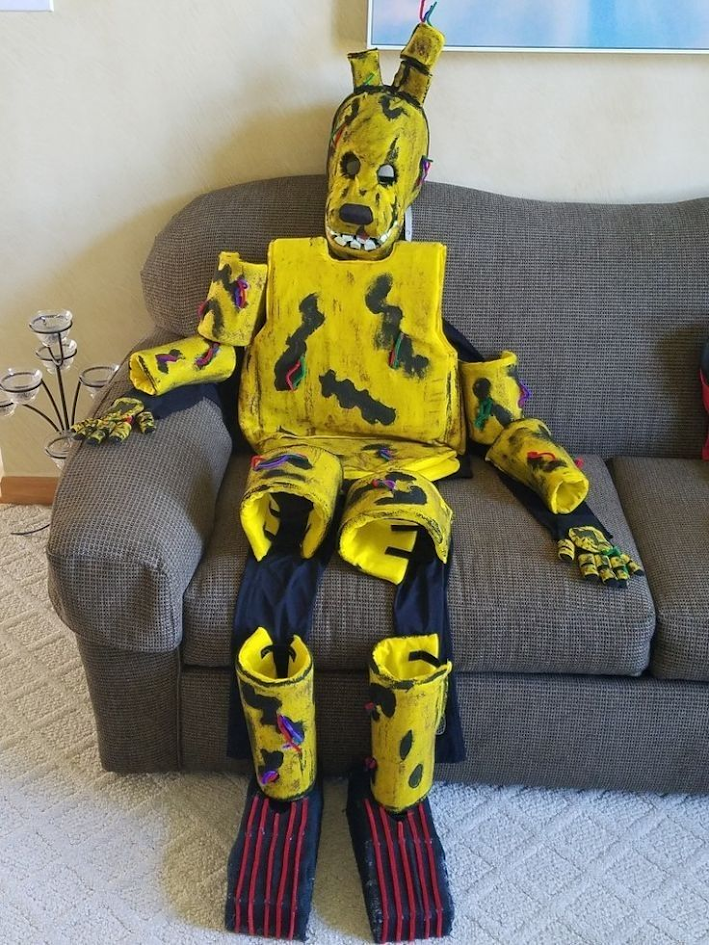
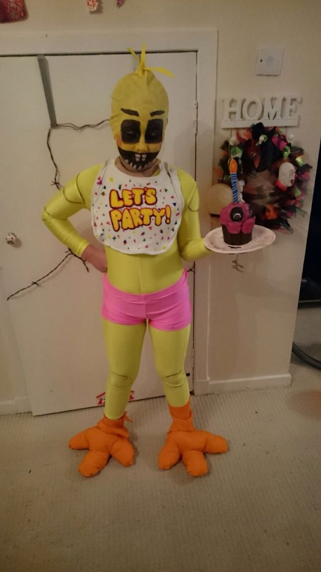

Mientras buscas las pistas para escapar, Freddy intentará distraerte, provocarte y aprovecharse de tu frustración. ¿Podrás mantener la calma y salir con vida?

El aire se vuelve denso y el silencio, insoportable. No oyes pasos… pero sabes que no estás solo. Golden Freddy aparece sin aviso, distorsionando la realidad a su alrededor. Las luces parpadean, los relojes se detienen y tu mente comienza a jugarte malas pasadas ¿Podrás salir?

Entre cables quemados y el olor a óxido, algo se mueve dentro de las sombras. Springtrap no es solo una máquina… es la fusión retorcida de metal y venganza. Tendrás que mantener la calma y trabajar en equipo para escapar de este laberinto de pesadillas antes de convertirte en su próxima víctima.

Mientras exploras los pasillos oscuros del antiguo restaurante, escucharás el crujir de cadenas y el golpeteo de pasos metálicos. Foxy acecha desde las sombras, siempre listo para lanzarse sobre los desprevenidos. ¿Podrás escapar antes de que Foxy te atrape?

En los restos del viejo local aún resuena una melodía infantil… pero algo en ella ya no suena bien. Spring Bonnie aguarda entre los focos apagados, moviéndose cuando menos lo esperas. Sus ojos vacíos parecen seguirte mientras intentas resolver los enigmas que dejó atrás. Cada pista te acerca más a la salida… o más a él.

El olor a pizza quemada y metal oxidado llena el aire mientras exploras la cocina abandonada. Entre ollas y bandejas, se escuchan risas suaves y el chirrido de engranajes. Chica no soporta que toquen su cocina… Encuentra las pistas, resuelve los acertijos y evita hacer ruido, o pronto oirás su chillido detrás de ti.